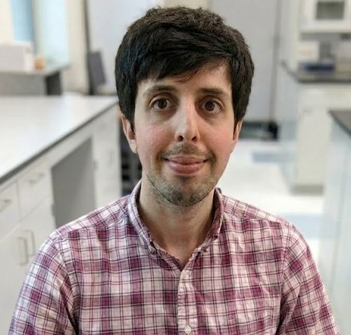
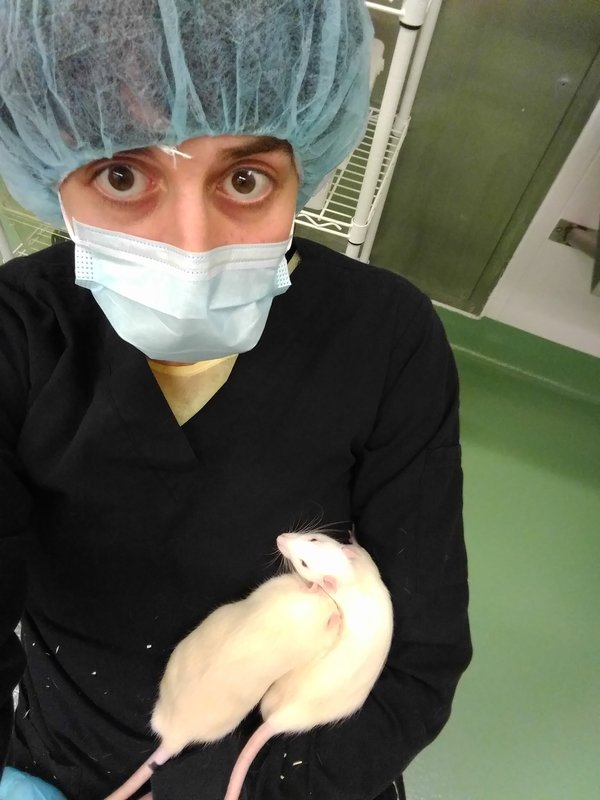

About

I'm a neuroscientist and quantitative researcher with fifteen years of preclinical and analytical experience across academic and industry-adjacent research. I'm a first author in CNS Neuroscience & Therapeutics and a contributing author in Cell, with published work spanning Alzheimer's therapeutics, whole-brain imaging, and applied machine learning. I use R and Python for reproducible analysis and evidence synthesis, and pair that with strong bench technique and six years of teaching statistics.
It started earlier than that suggests. I began doing neuroscience research at CUNY Queens College, in Richard Bodnar's lab, while I was still in high school, and I never really stopped. My enduring fascination with how the brain produces the mind and behavior has widened into an equal interest in how research itself gets done -- the technology, the statistical methods, the logistics, and the institutional culture that determines whether it works.
Cold Spring Harbor Laboratory
After college, I spent five years at Cold Spring Harbor Laboratory in Pavel Osten's lab, and it was there that my identity as a researcher started to take shape. I began as a research technician and worked my way up to lab manager, and I came away with four things that still drive me.
The first was real technical depth, especially in microscopy and rodent behavioral testing. Our group ran serial two-photon tomography to build brain-wide maps at single-cell resolution, work that taught me that technological progress and scientific progress go hand in hand. I handled the immunolabeling validation for our 2017 Cell paper mapping GABAergic interneurons across the whole mouse brain, and worked on characterizing the social behavior and neuroanatomy of the Cntnap2 knockout, a mouse model of autism.
The second was management and logistics. As lab manager I coordinated the animal colony under IACUC oversight, handled budgets and procurement, and kept a group of postdocs and technicians supplied, trained, and on schedule. (It was here I developed a passion for laboratory-animal welfare, and I remain convinced that enriched and well-treated animals make for rigorous and translationally relevant science.) More than anything, the role taught me that organization and logistics are essential to an effective lab.
The third was programming, which started as a way to automate tedious tasks and grew into an interest in computer systems and elegant software solutions.
The fourth was a taste for industry. CSHL gave me a close look at how academic labs and industry (biotech and pharma) research groups actually work, and I found I preferred the pace, focus, and applied orientation of industry-style research to the academic track -- a realization that has shaped every choice since.
University at Albany
My time at SUNY Albany, with James Stellar as my adviser, was deliberately multidisciplinary, and the projects I took on were guided by a pragmatic, translationally-minded research agenda. On the bench, I studied the earliest stages of Alzheimer's disease in a rat model and tested whether IGF-2 delivered intranasally (a delivery route I chose specifically because it could plausibly translate to patients) could blunt the cognitive decline that normally follows. That work became a first-author publication in CNS Neuroscience & Therapeutics. I also got to work with a lot of talented undergraduates, and mentoring them became one of the most rewarding parts of the job.

Albany is also where I got serious about statistics -- and increasingly frustrated by how routinely it's misused in published research. I volunteered to teach statistics for psychology when no other graduate student wanted to, and I ended up teaching it for six years. Improving how the field uses statistics became a kind of "meta" project for me -- a way to make research better in aggregate rather than one experiment at a time. That's the same instinct that pushed my dissertation off the bench and into a meta-analysis of a translationally important question: do similar interventions (e.g. enrichment, drugs) produce similar cognitive effects in humans and lab rodents? My analysis revealed that rodents show roughly 2.5x larger gains from environmental enrichment than comparable human studies do -- a finding with significant implications for generalizing from rodent studies to humans.
What I'm working on now
I'm a research collaborator with the Metascience Observatory, which studies how reliable published research really is across different fields -- the natural next step after a dissertation spent poking at exactly that question.
Alongside several writing projects and tutoring, I build software tools. Most of them are things I wished existed while I was doing research or teaching:
- Nimble Lab Manager -- the lab-management tool I wish I'd had at CSHL, built to be efficient for both the people using it and the administrators running the facility. Building it grew my familiarity with SQLite and with multi-user software that has to keep a lot of moving parts in sync. The goal is a Slack app a lab group can actually live in.
- Figure Extractor -- a meta-analysis tool that fills a real gap in existing software like DistillSR and metafor. Much of the important data in a publication has to be extracted from the figures, and until recently there was no robust way to pull that information out of PDFs and into a database.
- Active Reader -- an open-source, self-hosted take on the "interactive documents" feature from the enterprise education platform FeedbackFruits. My version is both a pedagogical tool and a self-directed guided-reading tool, meant to improve retention and build better reading habits.
Teaching, tutoring & consulting
Teaching has always been central for me, and I still do it. I work primarily with undergraduates -- especially STEM students heading toward graduate or medical school -- who need a real research project and a strong letter of recommendation but aren't sure how to get there. A lot of what I teach is the stuff undergraduate STEM education tends to skip: the basics of programming, GitHub, data management, reference management, and the softer skills nobody assigns you like networking and negotiation. My Research Literacy guide grew straight out of this.
If that sounds like you, I'd like to help. I keep flexible pricing, and you can book time with me on Calendly or Clarity.fm. I also do more conventional tutoring for high school and undergraduate students, in person or online.